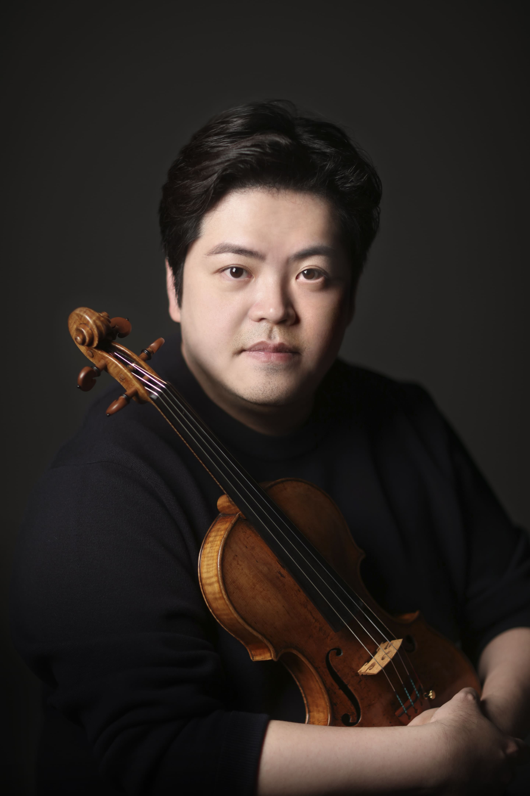
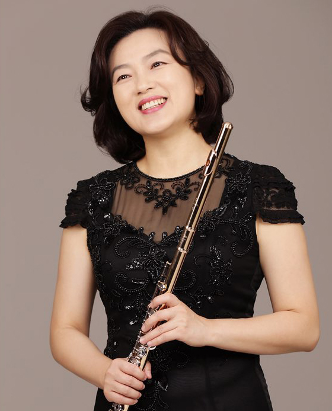
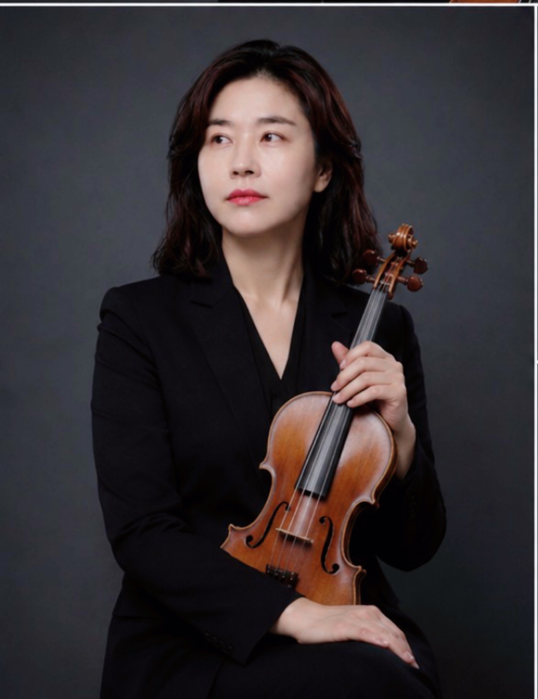
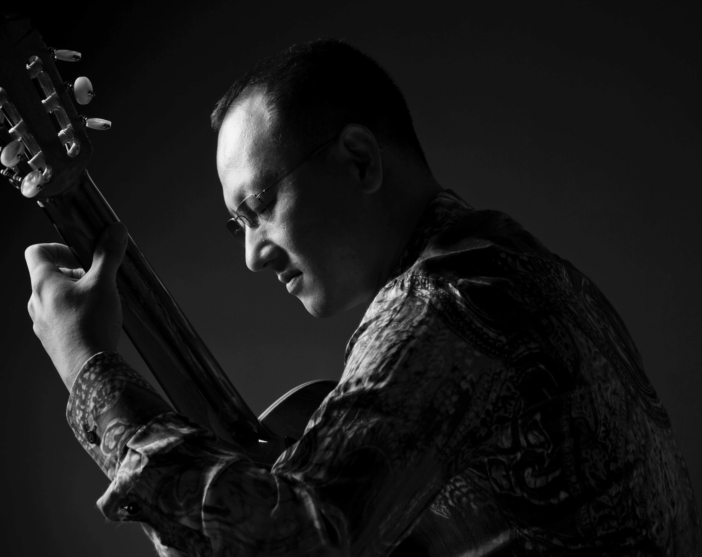
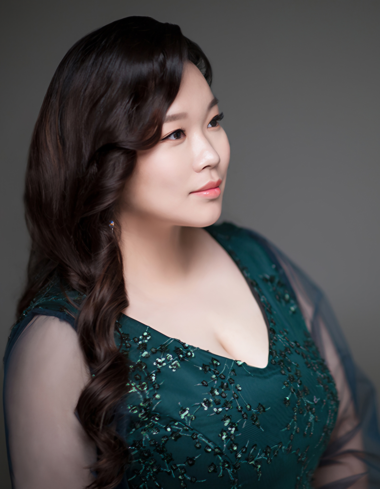
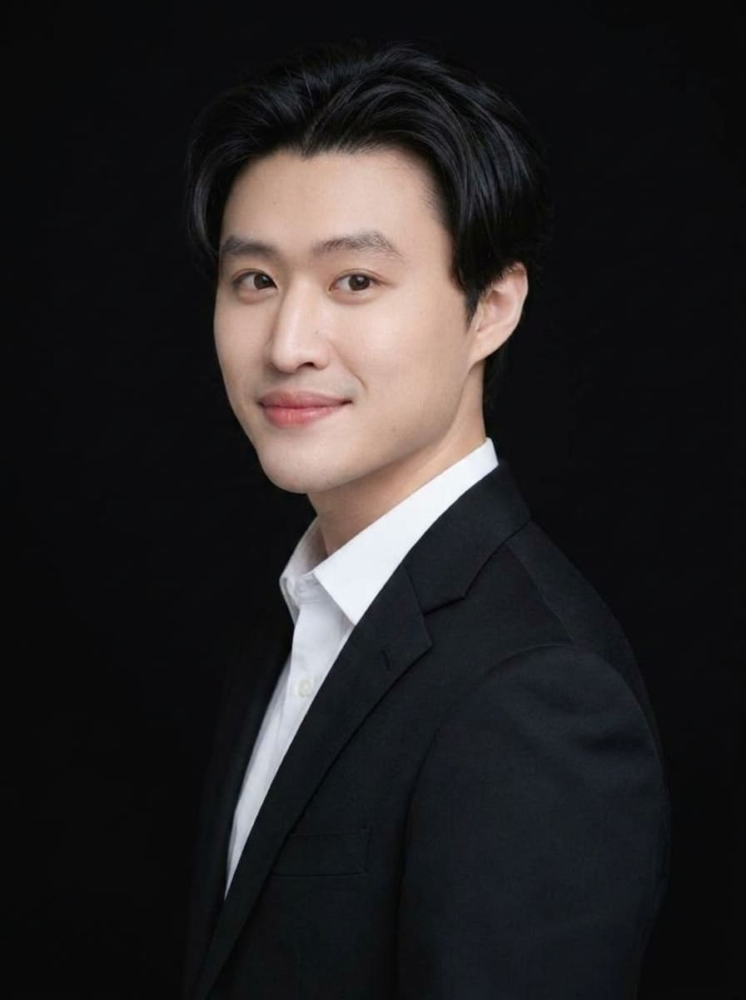
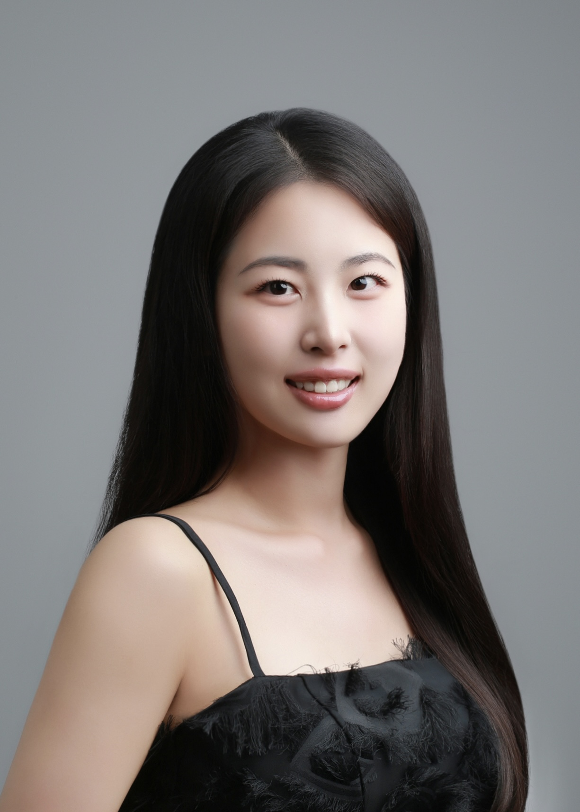

01 / Director's Message
연구소장 인사말
정기연주회 & 아카이브
엄선된 기획의 ‘시대공감 시리즈’ 등 정기 공연을 통해 새로운 레퍼토리를 발굴하고 연주 실황을 체계적으로 보존합니다.
학술 세미나 & 마스터클래스
고음악 문헌 연구, 피아노 문헌학, 현대 음악 융합 실험을 발표하는 세미나와 전문 교육 세션을 정례화합니다.
국제 문화교류
한중교류음악회 등 세계 유수의 음악가 및 학술 단체들과 국경을 넘나드는 연대와 공동 프로젝트를 추진합니다.
찾아가는 음악회
문화 소외지역과 지역 시민 곁으로 직접 찾아가 클래식 음악의 치유와 감동을 나누는 공공 예술을 실천합니다.
02 / Members & Artists
연구진 및 아티스트

연구소장 · Pianist
강우성
- 서울예술고등학교 졸업
- 한국예술종합학교 음악원 및 동 대학원 졸업
- 독일 트로싱엔 국립음악대학 최고연주자과정(K.E.) 졸업
- 삼익 피아노 콩쿠르 대상, 칼 벡슈타인 대학콩쿠르 특별상
- 아스티 국제콩쿠르 우승, 페다라 국제콩쿠르 우승
- KCO, 춘천시향, 원주시향, 부천시향, 몰도바 국립방송교향악단, KT 심포니 등 협연
- 현) 국립강원대학교 문화예술공과대학 음악학과 교수, 부학장

수석연구원 · Violinist
이석중
- 예원학교, 서울예고 수석입학, 줄리어드 예비학교
- 한국예술종합학교 예술사 및 독주자과정 졸업
- 미국 예일 대학교 석사(M.M) 및 최고연주자과정(A.D) 전액장학생 졸업
- 해외파견콩쿨 현악 전체대상(병역특례), 이화경향 등 입상
- KBS교향악단, 국립심포니, 강남심포니 등 협연
- 아베끄 스트링 콰르텟 리더, 서울튜티·MEG앙상블 악장, TIMF앙상블 단원
- 현) 국립강원대학교 문화예술공과대학 음악학과 교수

Flutist · Traversoist
김정현
- 강원대학교 사범대학 음악교육학 학사
- 미국 Southern Illinois University 석사 (M.M)
- 강원대학교 대학원 박사 (D.M.A)
- 춘천시향 상임단원, 서울오라토리오오케스트라 수석 역임
- 아시아플루트연맹(AFF) 국제콩쿠르 심사위원 역임
- 현) 춘천국제고음악제 이사, 강원도음악협회 부회장, 강원대 평생교육원 출강

Violist · Baroque Violist
허순구
- 건국대학교 대학원 음악교육과 졸업
- 러시아 Moscow The Specialized Institute of Arts 전문연주자과정 (M.A)
- 강원대학교 공연예술학 박사 (Ph.D)
- 강원스트링오케스트라 지휘 및 음악감독
- (사)하모니팝스오케스트라 악장, 춘천시古음악단 <카메라타춘천> 단원
- 현) 춘천챔버뮤직소사이어티 대표, 춘천시음악협회 이사

Guitarist
김성진
- 서울예술고등학교 졸업
- 독일 국립뮌스터음대 전문연주자과정 졸업
- 독일 국립데트몰트음대 최고연주자과정(Konzertexamen) 졸업
- 대전일보 기타콩쿠르 1위, 라트비아 'CHAIN' 유럽 현대음악 콩쿠르 2위
- 독일 뮌스터 국립음대 예술조교 및 한국기타협회 부회장 역임
- 현) GranGuitarEnsemble 단장, 가일플레이어즈 단장, 강원대 출강

음악감독 · Pianist · Cembalist
전상영
- 강원대학교 문화예술대학 음악학과 졸업
- 이탈리아 부르노 마데르나 국립음악원 디플로마 및 최고연주자과정 졸업
- 강원대학교 공연예술학 박사 (Ph.D)
- 현) 강원음악연구소 예술감독, 강원대학교 음악학과 및 동대학원 출강

Baritone
조용원
- 강원대학교 예술대학 음악학과 졸업
- 강원차세대 음악회 출연 및 비목콩쿨 가창상 수상
- 춘천시립교향악단, 춘천시민필하모닉 협연
- 화천소년소녀합창단, 춘천레이디스싱어즈, 춘천시청봄내합창단 지휘
- 현) 춘천시립합창단 베이스 부수석, 함께자라기 사회적협동조합 이사장

Soprano
이지혜
- 이화여자대학교 성악과 및 동 대학원 졸업
- SC 음악콩쿠르 전체대상, 한국성악회콩쿠르 1위, 소리얼콩쿠르 1위
- 과천국제콩쿠르 3위, 수리음악콩쿠르 3위 등 유수 콩쿠르 석권
- 춘천시음협 송년음악회, 영산 영아티스트 콘서트 등 다수 출연
- 현) 춘천시립합창단 단원 및 전문 연주자로 활동

Violinist
이도영
- 강원대학교 문화예술대학 음악학과 졸업
- 독일 Trossingen 국립음대 석사(Master) 졸업
- 강원대학교 대학원 음악학과 박사과정 수료
- 이탈리아 Citta di Barletta 국제콩쿨 2위, 제12회 강원예술상 청년예술인상
- 클래식 앙상블 클랑(Klang) 음악감독, 트리오 쏘아베 바이올리니스트
- 현) 설악 프라임 / 고성 필하모닉 지휘자, 속초시음악협회 부지부장

Pianist
김재빈
- 강원대학교 음악학과 피아노전공 졸업
- 폴란드 국립쇼팽음악대학교(UMFC) Performance Course 수료
- 양구청춘합창단·팔렬고등학교 등 합창 피아노 강사 역임
- 현) 문화예술기업 (주)블랑클래식 대표, 강원대학교 대학원 음악학 피아노전공 석사과정

대외협력본부장 · Pianist
김주영
- 중국 심양음악학원 피아노전공 졸업
- 강원대학교 대학원 음악학과 피아노전공 석사과정 졸업
- 현) 강원음악연구소 대외협력본부장, 강원대학교 대학원 박사과정 재학

사무국장 · Pianist
윤아현
- 제6회 강원 음악 콩쿠르 2위
- 2023 모차르트 한국콩쿨 2위
- 2023 강원학생예술축전 1위
- 2025 중국 저장성 후저우시 한·중 교류음악회 출연
- 현) 강원음악연구소 사무국장, 강원대학교 음악학과 3학년 재학